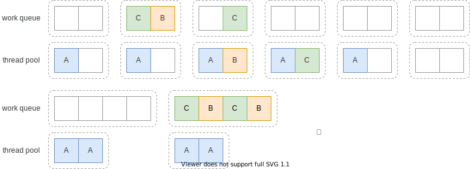

线程池使用
上节中我们了解了线程池的一些基本概念，线程池在使用上还有一些需要注意的地方。
线程池大小
先上结论：没有标准方法能完美决定线程池的大小，需要测试，具体问题具体分析。
这里摘抄文章Java线程池实现原理及其在美团业务中的实践中的调研结果：
| 方案 | 问题 |
|---|---|
| $$N_{cpu} = \text{number of CPUs}$$ $$U_{cpu} = \text{target CPU utilization}, 0 \le U_{cpu} \le 1$$ $$\frac{W}{C} = \text{ratio of wait time to compute time}$$ $$N_{threads} = N_{cpu} U_{cpu} (1 + \frac{W}{C})$$ | 出自《Java 并发编程实战》，方案偏理论，像线程的计算时间和等待时间很难测算 |
| $$coreSize = 2 N_{cpu}$$ $$maxSize = 25 * N_{cpu}$$ | 没有考虑使用多个线程池的情况，且统一配置明显不符合多样的业务场景 |
| $$coreSize = tps \times time$$ $$maxSize = tps \times time \times (1.7 \text{~} 2) $$ | 考虑了业务场景，但假定流量平均分布，可能不符合实际业务场景 |
可以将上面的公式作为一个经验数值，再根据实际的业务情况来做性能测试来微调。就像美团的文章里说的，很多时候，流量的压力并不是平均的，实际上也不可能有一套参数能解决所有问题，还是得具体问题具体分析。
有界还是无界
阿里的 Java 规范里有这么一条：
【强制】线程池不允许使用
Executors去创建，而是通过ThreadPoolExecutor的方式，这样的处理方式让写的同学更加明确线程池的运行规则，规避资源耗尽的风险
原因是 Executors 方法创建出的线程池，全都是无界队列，这样的队列会一直接收任务，直到内存耗尽（OOM）1。如果有界队列满了，
ThreadPoolExecutor 默认会抛出 RejectedExecutionException 异常。一个常见的需求是如果队列满了，就阻塞提交任务，可以这么实现：
ExecutorService pool =
new ThreadPoolExecutor(
2, // corePoolSize
4, // maximumPoolSize
60, // keepAliveTime
TimeUnit.SECONDS,
new LinkedBlockingQueue<>(10), // ① bounded queue (capacity = 10)
(r, e) -> {
try {
e.getQueue().put(r); // ② on Rejected, blocking put
} catch (InterruptedException interruptedException) {
interruptedException.printStackTrace(); // ③ print and abort on interrupted
}
});
在 ① 处定义了接收线程池任务的有界队列，大小为 10，当等待任务超过 10 个时，新任务会在 ② 处调用阻塞的 put 方法再次提交到队列中直到队列能容纳新的任务。在 ③
中处理提交被中断时的情形。
阿里的规范里并不要求一定要创建有界队列，很多时候需要具体问题具体分析，不过个人认为有界队列通常是更好的选择，毕竟系统压力大时，本身就处理不了那么多任务，无界队列不断堆积任务，不仅处理不了，还消耗额外的内存，作用不大。
饱和策略
在使用有界队列时，当提交的任务达到了队列的上限，此时应该如何处理？处理的策略就称作饱和策略（Saturation Policies）。上节中我们自定义了策略：阻塞提交到队列中。ThreadPoolExecutor 提供了一些策略方便使用，它们实现了RejectedExecutionHandler：
AbortPolicy：拒绝新的任务，抛出RejectedExecutionException异常DiscardPolicy：默默抛弃新的任务，不抛异常DiscardOldestPolicy：抛弃队列中最老的未被处理的任务，并尝试重新提交新任务CallerRunsPolicy：在调用方的线程上运行新任务
ThreadPoolExecutor 默认使用 AbortPolicy：
private static final RejectedExecutionHandler defaultHandler = new AbortPolicy();
饥饿死锁
一般死锁的发生都是由于出现了循环依赖，考虑任务 A 依赖了任务 B、C 的结果，假设 A 将任务 B、C 提交到同一个线程池，那么可能发生下面的情形：

问题在于，在 B、C 任务执行完成前，任务 A 所在的线程会一直被占用。如果线程池中有空闲的线程，则 B、C 任务最终会被执行，从而任务 A 最终完成（图中上面的情况）。但是如果此时有两个任务 A 占用了线程池，导致提交的 B、C 任务无法执行，此时产生死锁（图中下面的情况）。
原因是任务 A 依赖 B、C 的结果，而 B、C 又依赖任务 A 退出释放线程资源。
只运行独立同构任务
同一个线程池中运行异构的任务，除了上面说的死锁的问题，还可能影响响应时间。
例如有一些时间敏感的任务，和一些时长很长的任务一起提交到线程池中，可能出现大量线程被时长很长的任务占据，导致时间敏感的任务需要等待很长时间才能被运行，从而导致响应时间过长。
所以推荐在线程池中只运行同构的任务，同时为了防止死锁，尽量运行独立的任务。
扩展 ThreadPoolExecutor
要正确实现一个完整的线程池是非常困难的，很多时候我们只是希望增加某个功能或对现有功能做微调。一种方式是构造 ThreadPoolExecutor 时使用不同的参数；另一种是直接继承 ThreadPoolExecutor。
ThreadPoolExecutor 有 3 个 protected 函数可供扩展：
beforeExecute：在任务被执行前执行，可以用来增加一些监控信息。如果方法抛异常，则任务不被执行，且相应的afterExecute不被执行。afterExecute：在任务执行结束后执行，由任务的执行线程调用。terminated：线程池中止后执行。可以用来释放线程池分配的资源、记日志等。
注意的是，实现这些方法时，约定上需要调用 super 的相应方法。
例如我们希望记录线程池所有线程总的运行时间，可以这样做2：
public static class TimingPool extends ThreadPoolExecutor {
private final ThreadLocal<Long> startTime = new ThreadLocal<>();
private final AtomicLong totalTime = new AtomicLong(0);
private final Logger log = Logger.getLogger("TimingPool");
public TimingPool(int corePoolSize, int maximumPoolSize, long keepAliveTime,
TimeUnit unit, BlockingQueue<Runnable> workQueue) {
super(corePoolSize, maximumPoolSize, keepAliveTime, unit, workQueue);
}
@Override
protected void beforeExecute(Thread t, Runnable r) {
startTime.set(System.currentTimeMillis());
super.beforeExecute(t, r);
}
@Override
protected void afterExecute(Runnable r, Throwable t) {
long elapsed = System.currentTimeMillis() - startTime.get();
totalTime.addAndGet(elapsed);
super.afterExecute(r, t);
}
@Override
protected void terminated() {
log.info("total time(ms) is: " + totalTime.get());
super.terminated();
}
}
小结
线程池只是一把剑，有了剑还得修炼剑法才能成为大侠。本节介绍了使用线程池的一些注意点，包括线程池大小的确定；队列应该有界还是无界；队列满了该怎么办；极端情况下的饥饿死锁问题；以及如何扩展线程池的行为。
这些内容只能是算抛砖引玉，希望读者能查阅更多资料，在实际中掌握更多线程池的使用技巧，也欢迎探讨这里没有涉及的内容。
线程池的使用已经很复杂了，线程的清理可能还更复杂一些，下面的小节中我们会开始介绍线程的关闭及线程池的关闭。
我们希望在消费有压力的时候，能给上游的生产方压力，这也叫做“背压”(backpressure)，在线程池里，通过创建有界的队列，在队列满时会抛出异常，能及时给上游反馈，希望能减少生产的速率。
修改自《Java 并发编程实战》